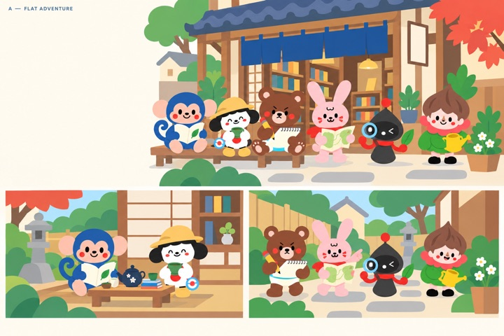
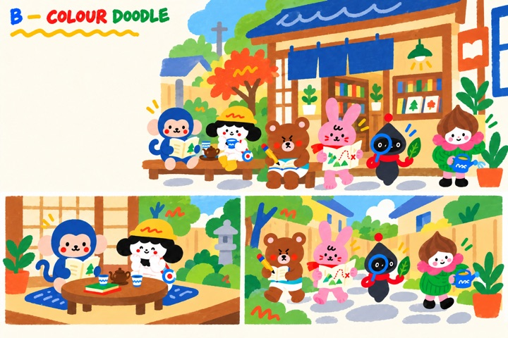
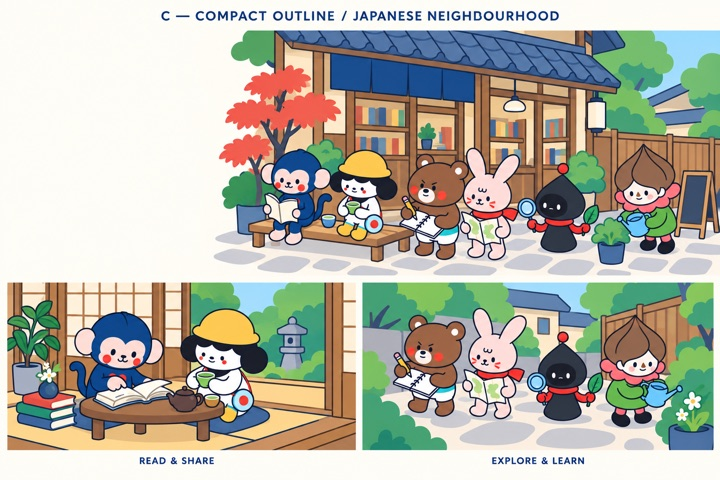
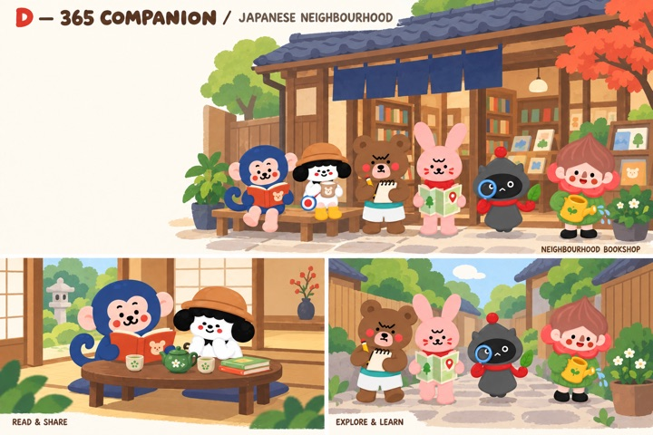

Style A
A — Flat Adventure
Landing-page direction.
A/B/C/D boards for comparing the Japanese scene illustration directions.

Landing-page direction.

High-contrast doodle study.

Outlined flat study.

Editorial companion direction.